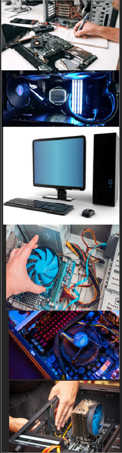

Services and Pricing
If you are in need of a computer repair or a software/hardware computer issue, we can diagnose and repair it properly. All completed computer repairs have a 12 month guarantee. We can fix a wide variety of computer related problems in store. Including virus removal, start-up repair, data recovery, we can also provide computer upgrade options.
We provide a free diagnostic test on your device, give you a quote on how much it will cost for repair, if your happy with the cost we will continue and fix the device for you. If you dont want it repaired that is no hassle either, you can pick up your device with no cost to pay.
| Repair | Price |
|---|---|
| PC/laptop computer health check | £25 |
| Memory Upgrade(without RAM) | £20 |
| Virus Removal (low infection on a fast pc) | £30 |
| Virus Removal (high infection on a slow pc) | £50 |
| Hard drive replacement (with basic windows installation, no data to recover and no computer to set back up) | £80.00 (includes 500gb new hard drive) |
| Laptop keyboard replacement | £35 includes price of keyboard |
| Laptop DC jack repair | £50 |
| Data Recovery (File Recovery) | £40.00 (Logical damage – typically ranges from £40 to £190 depending on the size and complexity of the case) |
| Basic Windows installation (no data to backup or recover. Windows & drivers only) | £35.00 (does not include setting up printers, broadband, emails etc.) |
| Full Windows installation (backup and restore user data, latest windows updates, free anti virus, latest drivers, office) | £55.00 (add £25.00 for set up of broadband, printer, anti virus, email) |
Back to homepage
